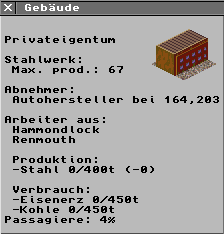

zur Simutrans-Anleitung
Simutrans Anleitung - Das Fabrikinfofenster
Das Fabrikinfofenster enthält Informationen zur gespeicherten
Warenmenge und zur Produktivität der Fabrik. In der ersten
Abbildung wird das Infofenster eines Stahlwerkes dargestellt.

- Die Aussage "Privateigentum" deutet an, daß
die Fabrik einen Besitzer hat, und nicht so einfach
abgerissen werden darf.
- Danach folgt der Name der Industrieanlage: "Stahlwerk"
- Bei Fabriken, die keine Endverbraucher sind, wird ein möglicher
Abnehmer angezeigt.
- Neuerdings wird auch angezeigt, woher die Arbeiter der
Fabriken kommen. Man kann also bei diesem Beispiel Leute
aus "Hammondlock" oder "Renmouth"
mittels Zug oder Bus zum Stahlwerk und von dort auch
wieder zurück bringen.
- Die nächste Zeile beschreibt den Lagerbestand und die
Produktivität:
Es sind 0t von max. 400t Stahl am Lager. Sollten die 400t
erreicht werden, wird die Produktion von Stahl
eingestellt, weil keine Lagekapazitäten mehr frei sind.
- Bei einem verarbeitenden Betrieb wie dem oben
dargestellten Stahlwerk kommen noch Angaben über die
verbrauchten Rohstoffe dazu:
Das Stahlwerk verbraucht Eisenerz und Kohle, von jedem können
450t gelagert werden. Der Lagerbestand ist bei beiden 0,
deshalb wird z.Z. kein Stahl produziert. Wäre genügend
Rohmaterial vorhanden könnten am Tag max. 3t Stahl
produziert werden.
zur Simutrans-Anleitung
von Hansjörg Malthaner
EMail: hansjoerg.malthaner@gmx.net
Änderungen von Henrik Wolff
eMail@Henrik-Wolff.de